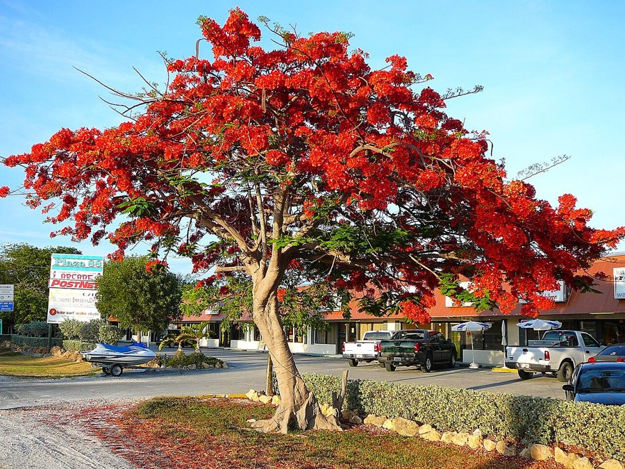

गुलमोहरFlame Tree
Delonix regia · Fabaceae · FLR-0071

- Scientific name
- Delonix regia (Bojer ex Hook.) Raf.
- Family
- Fabaceae
- Hindi
- गुलमोहर
- Status here
- naturalized
- IUCN
- LC
When to look कब देखें
Present all year.
गुलमोहर / Flame Tree
Delonix regia (Bojer ex Hook.) Raf. — Fabaceae
गुलमोहर (शाही पॉइन्सियाना / पीकॉक फ्लावर / फ्लेम ट्री) — पूर्वी उत्तर प्रदेश के शहरों, सड़कों के किनारों, और राजमार्गों के बीच (medians) व्यापक रूप से लगाया जाने वाला एक बड़ा, तेजी से बढ़ने वाला और छतरी जैसी फैली हुई छतरी (massive flat-topped canopy) वाला पतझड़ी पेड़ है। यह मूल रूप से मेडागास्कर का निवासी है, जिसे भारत में एक सजावटी पेड़ के रूप में पेश किया गया था और अब यह उत्तर प्रदेश के मैदानी इलाकों में पूरी तरह से अभ्यस्त (naturalized) हो चुका है। भीषण गर्मी के महीनों (मई-जून) में इसके पत्ते गिर जाने के बाद, पूरा पेड़ चमकीले नारंगी-लाल रंग के फूलों (brilliant orange-red flowers) से पूरी तरह ढक जाता है, जो उत्तर प्रदेश की गर्मी में सबसे शानदार फूलों का नजारा पेश करता है। फूलों के गिरने के बाद, इस पर तलवार जैसे लंबे, चपटे, गहरे भूरे रंग के फलियाँ (flat seed pods up to 60 cm) महीनों तक लटके रहते हैं। यह पेड़ प्राकृतिक जंगलों के लिए देशी नहीं है, इसलिए इसे केवल बागवानी और सड़क सौंदर्यीकरण तक ही सीमित रखा जाना चाहिए।
Quick Identification त्वरित पहचान
| Feature | Description |
|---|---|
| Tree habit | Medium to large tree up to 10–15 meters high, famous for its very broad, flat-topped, umbrella-like canopy |
| Leaves | Alternately arranged, feathery, bipinnate compound leaves, with thousands of tiny, oval leaflets |
| Flowers | Large (8–10 cm), scarlet or orange-red, with five spreading petals; one petal is white/yellow with red spots |
| Fruit | Very long (30–60 cm), flat, woody, dark brown to black pods, hanging vertically from branches |
| Bark | Smooth, grey or light brown, sometimes developing small warty lenticels |
Field tip: Look along state highways in May. Search for a tree with a broad, flat canopy that is completely covered in a fiery blanket of orange-red flowers. Look on the ground for very long, flat, sword-like woody pods that make a rattling sound when shaken (due to loose seeds inside).
Morphology आकारिकी
Biometrics (typical measurements of mature trees in the northern Indian plains):
| Measurement | Range |
|---|---|
| Tree height | 10–15 m |
| Canopy spread | 12–18 m |
| Leaf length | 30–50 cm |
| Leaflet length | 0.5–1.0 cm |
| Flower diameter | 8–10 cm |
| Pod length | 30–60 cm |
Trunk and Bark: The trunk is short, buttressed in old trees, with a smooth, light grey bark. The wood is light, soft, and weak, prone to breaking during heavy monsoon winds and storms.
Foliage: feathery, light green leaves. Each leaf contains 10–25 pairs of pinnae, with each pinna carrying 20–40 pairs of tiny, oblong leaflets. The leaves fall in early spring, leaving the canopy bare until flowering.
Flowers: Large, bright red or orange, grouped in terminal racemes. Each flower has 5 sepals and 5 clawed petals. The upper petal (standard) is slightly larger and marked with yellow, white, and red streaks (serving as a nectar guide).
Fruit and Seeds: The pod is woody, flat, containing 20 to 40 oblong, hard, grey-striped seeds arranged transversely.
Associated Species / Interactions संबंधित प्रजातियाँ
- Pollinators: The large, colorful flowers are visited by butterflies (such as the Common Mormon Papilio polytes) and sunbirds that feed on the nectar.
- Invasiveness note: Since it has a broad, dense, shade-producing canopy, it suppresses the growth of understory plants. It should not be planted near natural forest reserves or riverbanks where it can crowd out native trees.
Pests and Diseases कीट और रोग
- Root Rot: Caused by the fungus Ganoderma in wet or clay soils, leading to sudden tree fall.
- Flattid Bug: Small sap-sucking bugs cluster on young shoots, exuding white wax and honeydew.
- Wood Borers: Beetles attack the soft wood of weakened trees, creating structural weakness.
Traditional and Ethnobotanical Use पारंपरिक और नृवंशवनस्पति उपयोग
- Natural Toy Play (Rattle): Children collect the dry, woody seed pods in winter, using them as natural musical rattles (jhunjhuna) by shaking the seeds inside.
- Traditional Malaria Decoction: The leaves and bark are boiled in water to prepare a bitter decoction, used traditionally in Madagascan and Indian folk medicine to relieve fever and body pain.
- Exotic Ornamental Shade: Planted along highway medians and city avenues to provide shade during the hot summer and stabilize dry roadside soil.
- Allelopathic Weed Suppressor: The fallen leaf litter contains natural compounds that release into the soil when decayed, helping to suppress competitive weeds directly beneath the tree canopy.
Expected Locally स्थानीय रूप से अपेक्षित
Not a field record. Written from published accounts for eastern Uttar Pradesh. No confirmed local sighting yet — if you have seen it, that is what the atlas needs.
अभी तक स्थानीय पुष्टि नहीं। यह विवरण प्रकाशित स्रोतों से है, किसी अवलोकन से नहीं।
A highly visible naturalized ornamental tree along the state highways and school campuses of the Basti district. They are regularly observed in the Harraiya, Vikramjot, and Basti blocks. Residents appreciate the tree for its spectacular summer blooms, which line the roads with bright orange-red borders in May, although local farmers avoid planting them on farm margins due to the heavy shade they cast on crops.
Distribution वितरण
Global range: Endemic to the dry deciduous forests of Madagascar; now naturalized and cultivated widely as an ornamental across all tropical and subtropical regions of the world.
In India: Widespread in all plains and states as a street tree.
In Uttar Pradesh: Abundant state-wide in all urban districts, parks, and highway borders.
In Basti district / eastern UP: Widespread across all suburban blocks.
Research Questions शोध प्रश्न
Anyone can investigate these | कोई भी इन प्रश्नों की जाँच कर सकता है
- How many days does a Gulmohar tree remain in full bloom during the summer peak in Basti? — Track and record flowering duration.
- Does the flat canopy of Gulmohar reduce soil temperature beneath it more than the canopy of a Shisham tree? — Compare soil temperatures.
- What is the germination rate of Gulmohar seeds when the hard seed coat is nicked with a file versus left intact? — Conduct seed treatment trials.
- Which butterfly species are the most frequent visitors to the red flowers of Gulmohar in June? — Conduct morning pollinator surveys.
- Does the soft wood of Gulmohar show higher damage from monsoon storm winds compared to native Neem trees in your block? / क्या आपके ब्लॉक में मानसून की तेज हवाओं के दौरान नीम की तुलना में गुलमोहर के पेड़ की शाखाएं अधिक टूटती हैं? — Document wind damage in local parks.
Similar Species मिलती-जुलती प्रजातियाँ
| Species | How to tell apart | comparison |
|---|---|---|
| Indian Coral Tree (Erythrina variegata) | Has large, trifoliate leaves (3 leaflets); spiny bark; flowers are beak-like crimson spikes | पांगारा — तीन बड़े पत्ते, काँटेदार तना, लंबे लाल फूल |
| Palash / Flame-of-the-Forest (Butea monosperma) | Has trifoliate leaves; orange flowers shape like parrot beaks, velvety; native | पलाश — तीन पत्ते, मखमली लाल-नारंगी फूल |
| Yellow Gulmohar (Peltophorum pterocarpum) | Has similar feathery leaves; flowers are bright yellow; seed pods are short, flat, reddish-brown | पीला गुलमोहर — पीले फूल, छोटी चपटी फलियाँ |
Field rule: Large tree with smooth grey bark, feathery bipinnate leaves, a wide flat canopy, brilliant orange-red flowers in summer, and very long, flat, sword-like woody pods, is the Flame Tree (Gulmohar).
Taxonomy & Classification वर्गीकरण
Original description. Wenzel Bojer first collected the tree in Madagascar, and William Jackson Hooker described it in 1836. Constantine Samuel Rafinesque placed it in the genus Delonix in 1837 in his Flora Telluriana (Part 2, p. 92). The genus name Delonix is derived from the Greek delos (conspicuous/visible) and onyx (claw), referencing the long-clawed petals. The specific name regia is Latin for royal or magnificent.
Subspecies. Monotypic — no subspecies are currently recognised.
Family and order placement. Placed in the order Fabales, family Fabaceae (legume family), subfamily Caesalpinioideae, tribe Caesalpinieae.
Phylogenetic notes. The genus Delonix contains approximately 11 species of deciduous trees, with 10 endemic to Madagascar and 1 to East Africa, representing a group adapted to arid tropical woodlands.
IUCN status rationale. Assessed as Least Concern (LC) by the IUCN Red List. While endangered and rare in its native wild habitats in Madagascar due to deforestation, the species is highly secure and abundant globally due to widespread cultivation.
Photo Gallery फोटो गैलरी
References संदर्भ
- Rafinesque, C. S. (1837). Flora Telluriana. Philadelphia, Part 2, p. 92. [original generic transfer]
- Hooker, W. J. (1836). Poinciana regia. Botanical Magazine, t. 3479. [original description]
- Brandis, D. (1906). Indian Trees. Archibald Constable & Co., London.
- Cowen, D. V. (1950). Flowering Trees and Shrubs in India. Thacker & Co., Bombay.
- World Flora Online (2024). Delonix regia taxon details.
- GBIF Occurrence Data — Delonix regia, India (2010–2025).
Source file: species/flora/trees/flame_tree.md